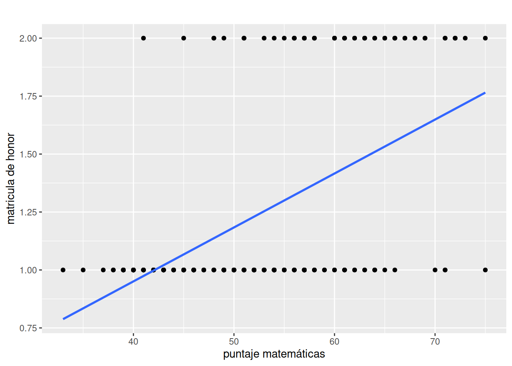
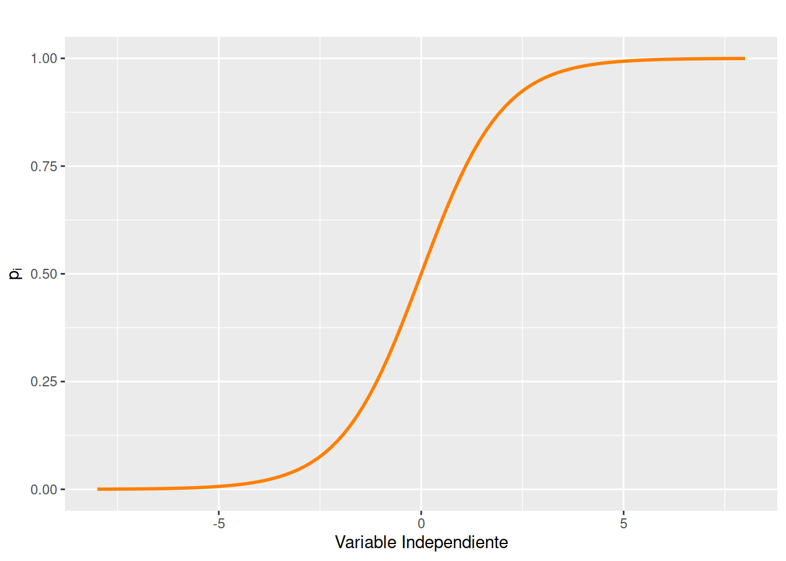

Inicialmente podríamos explorar una estimación de MCO, como posibilidad de estimación:
\[ Y = \beta_{0} + \beta_{1}X_{1} + \varepsilon \]
Donde la variable \(Y\) es una variable con dos categorías (binaria), la variable \(X\) corresponde a una variable numérica y \(\varepsilon\) corresponde a una variable aleatoria no observable.
Com prueba inicial y de comparación se plantea realizar la estimación por el método de mínimos cuadrados ordinarios.
library(tidyverse)
matricular$matricula=as.numeric(matricular$matricula)
matricular %>%
lm(matricula ~ matematicas , data = .) -> modelo0
summary(modelo0)
Call:
lm(formula = matricula ~ matematicas, data = .)
Residuals:
Min 1Q Median 3Q Max
-0.76516 -0.27653 -0.06712 0.17720 1.02596
Coefficients:
Estimate Std. Error t value Pr(>|t|)
(Intercept) 0.020053 0.150883 0.133 0.894
matematicas 0.023268 0.002822 8.245 2.25e-14 ***
---
Signif. codes: 0 '***' 0.001 '**' 0.01 '*' 0.05 '.' 0.1 ' ' 1
Residual standard error: 0.3729 on 198 degrees of freedom
Multiple R-squared: 0.2556, Adjusted R-squared: 0.2518
F-statistic: 67.99 on 1 and 198 DF, p-value: 2.248e-14El resultado muestra un valor muy bajo de ajuste, dado que los puntos están sobre el eje horizontal con \(Y=0\) o en el eje horizontal con \(Y=1\)
library(ggplot2)
# data(matricular)
matricular1=matricular
matricular1$matricula = as.numeric(matricular1$matricula)
g3=ggplot(data = matricular1, mapping = aes(x=matematicas, y=matricula)) +
geom_point() +
geom_smooth(method = "lm", se=FALSE) +
labs(y = "matricula de honor", x = "puntaje matemáticas") +
ggtitle(" ")
g3
Como se puede observar este modelo no permite ajustar una linea que represente los valores obtenidos en la prueba de matemáticas. Además de no cumplir con los supuestos planteados para el modelo de regresión lineal simple.
No normalidad de los errores
Heteroscedasticidad de errores
Posibilidad de que \(\widehat{Y_{i}}\) se encuentre por fuera del rango \([0,1]\), siendo que estimación de \(Y\) debe corresponder a la probabilidad de ocurrencia de \(Y\)
Valores muy bajos para \(R^{2}\), dada la dificultad de ajuste de los datos a una linea recta
Estos problemas los podemos superar al plantear el siguiente modelo teniendo como base la función de distribución acumulada \(F(x) = P(X \leq x)\) y la función logística:
\[f(z)= \dfrac{1}{1+\exp{\{-z\}}} = \dfrac{\exp{\{z\}}}{1-\exp{\{z\}}}\]
De esta ecuación se puede definir la probabilidad de \(P(Y=1| X=x)\) y su complemento \(P(Y=0| X=x)\) :
\[P_{i} = P(Y=1 | X =x) = \dfrac{1}{1+\exp{\{-\beta_{0}-\beta_{1}x_{i}\}}} + \varepsilon_{i}^{*}= \dfrac{\exp{\{ \beta_{0}-\beta_{1}x_{i} \}}}{1-\exp{\{\beta_{0}-\beta_{1}x_{i}\}}} + \varepsilon_{i}^{*}\]
\(P(Y=1| X=x)\)
\[1- P_{i} = P(Y=0 | X =x) = \dfrac{1}{1 + \exp{\{ \beta_{0}-\beta_{1}x_{i} \}}} \]
\(P(Y=1| X=x)\)
La división de estas dos probabilidades \(P(Y=1|X=x)\hspace{.2cm}/ \hspace{.2cm} P(Y=0
|X=0)\) genera \(Odds\)
(Odds ratio)
\[\Bigg(\dfrac{P(Y=k|X=x)}{1-P(Y=k|X=x)}\Bigg) = \exp{\Big\{\beta_{0}+ \beta_{1} \hspace{.2cm}x_{i} \Big\}} + \varepsilon_{i}^{*}\] Y finalmente al sacar logaritmos en ambos lados se obtiene la siguiente expresión lineal:
\[\ln \Bigg(\dfrac{P(Y=k|X=x)}{1-P(Y=k|X=x)}\Bigg) = \beta_{0}+ \beta_{1} \hspace{.2cm}x_{i} + \varepsilon_{i}^{*}\]
library(ggplot2)
fx=function(x){
1/(1+exp(-x))
}
ggplot(data.frame(x=c(-8, 8)), aes(x)) + stat_function(fun=fx, size=1, col="#FF7F00")
Empleando la función logística se replantea el modelo partiendo del logaritmo de la razón de probabilidades (logaritmo de los Odds ratio) en función de una combinación lineal de las variables independientes :
\[\ln \Bigg(\dfrac{P(Y=k|X=x)}{1-P(Y=k|X=x)}\Bigg) = \beta_{0}+ \beta_{1} \hspace{.2cm}x_{i} + \varepsilon_{i}^{*}\]
Su estimación se puede plantear de manera resumida como:
\[\ln \Bigg(\dfrac{P_{i}}{1-P_{i}} \Bigg) = \ln (Odds) =\beta_{0} + \beta_{1} \hspace{.2cm}x_{i} + \varepsilon_{i}^{*}\]
Donde :
El resultado se puede interpretar como:
| Si | \(P_{i} = 1-P_{i}\) | entonces | \(\dfrac{P_{i}}{1-P_{i}} = Odds =1\), | por tanto | \(\ln(Odds) = 0\) |
| Si | \(P_{i} < 1-P_{i}\) | entonces | \(\dfrac{P_{i}}{1-P_{i}} = Odds < 1\), | por tanto | \(\ln(Odds) < 0\) |
| Si | \(P_{i} > 1-P_{i}\) | entonces | \(\dfrac{P_{i}}{1-P_{i}} = Odds > 1\), | por tanto | \(\ln(Odds) > 0\) |
\(P_{i}\) : probabilidad de recibir matricula de honor
\(1-P_{i}\) : probabilidad de no recibir matricula de honor